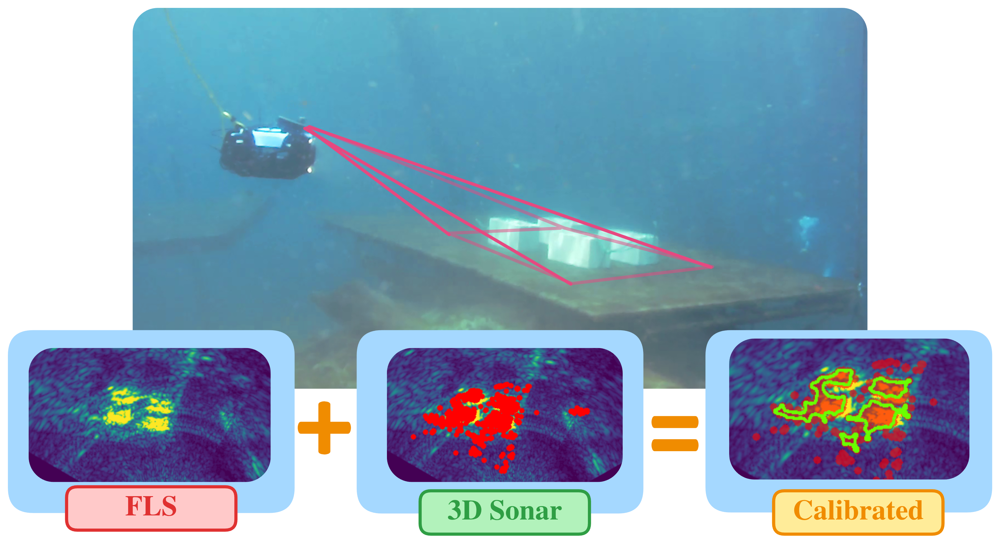
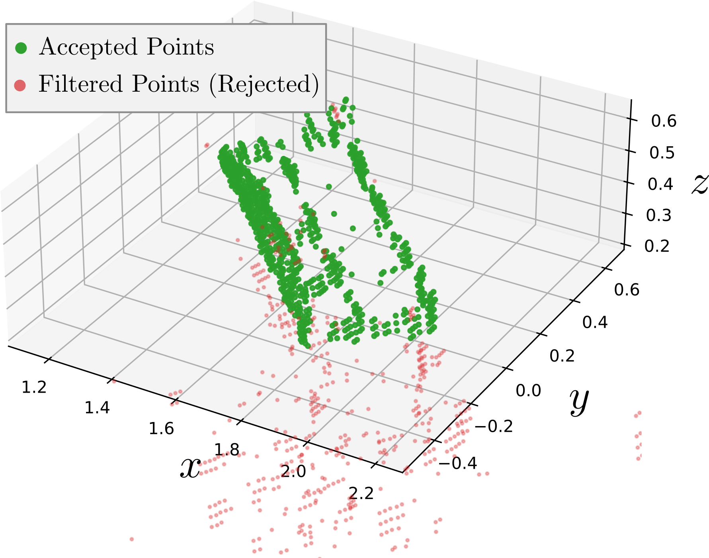
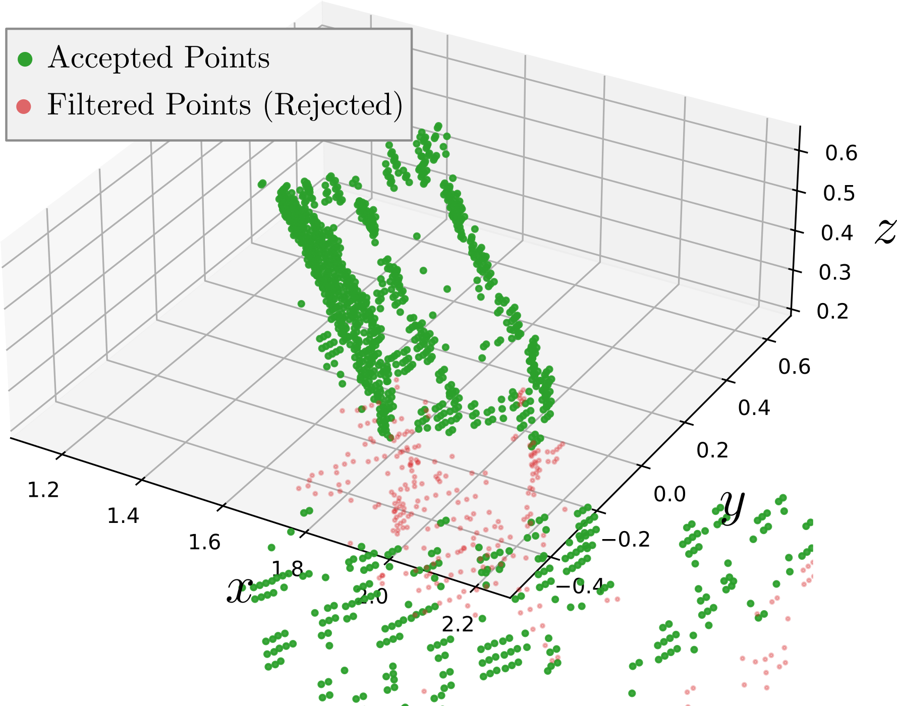
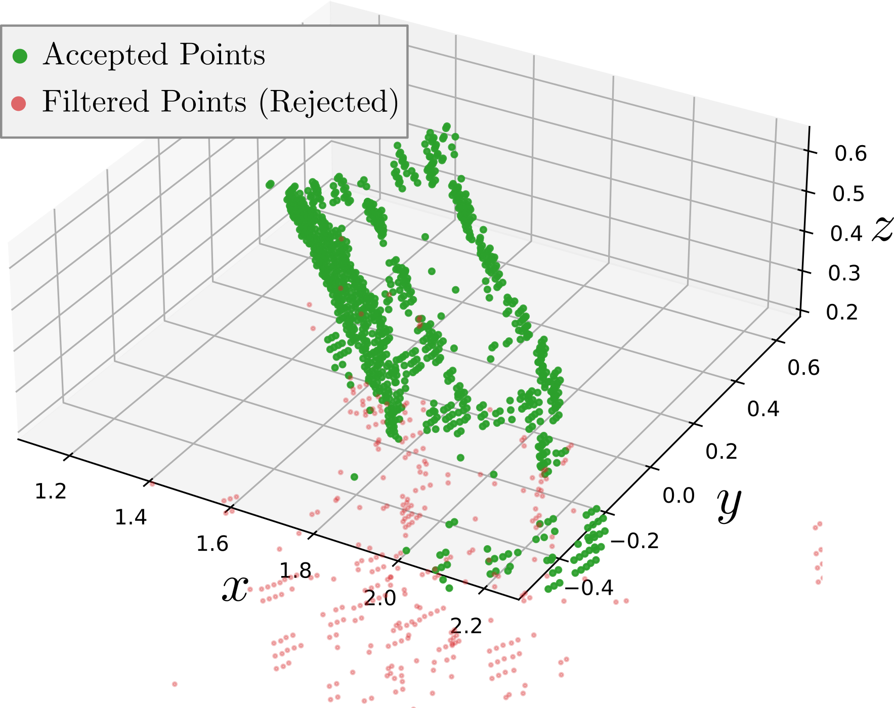

TLDR
A calibration method for a FLS-3D sonar fusion for object recognition and segmentation

In this paper we propose using two different sonar modalities: one that produces a 2D intensity image and another that generates a 3D point cloud. By implementing auto-calibration, we can filter out noisy features between the modalities to enhance feature extraction.
Two experiments were conducted: 1) validation of the calibrated methods against a ground-truth label and a manual calibration comparison, and 2) validation of the denoising process to improve feature recognition.
First we explore the performance of the auto-calibration to manual using labeled data
| Calibration Type | Dice Score ↑ | IoU ↑ | Chamfer Distance (px) ↓ | Reprojection Error (px) ↓ |
|---|---|---|---|---|
| Manual | 0.761 | 0.64 | 4.11 | 7.17 |
| Auto | 0.795 | 0.68 | 3.67 | 7.46 |
The auto calibration outperforms the manual calibration across all metrics. This is due to the difficulty of measuring the azimuth offset, radius, and azimuth scaling. The auto-calibration inherently allows for the minute changes in scaling and offsets. The calibration performance is approximately a $5\%$ improvement across overlap metrics (IoU and coverage) and a $0.5\mathrm{px}$ improvement in the distance metrics.
We then conduct a statistical calibration test across 336 frames.
| Calibration Type | Coverage ↑ | IoU ↑ | Mutual Information (px) ↑ | Hausdorff (px) ↓ |
|---|---|---|---|---|
| Manual | 0.59 | 0.45 | 0.29 | 35.39 |
| Auto | 0.64 | 0.50 | 3.33 | 34.89 |
The auto-calibration outperforms the manual calibration, but marginally on IOU and MI, even though the IOU and MI are expected to be penalized heavily for edge loss. This is largely due to the equal treatment of edge pixels and area pixels and to discretization. This leads to around a $5\%$ improvement in overlap metrics and a $0.5\mathrm{px}$ distance improvement over the manual calibration.
To validate that the calibration-enabled denoising provides tangible benefit beyond geometric alignment, we evaluated its effect on a downstream object recognition task. Specifically, we perform point-wise binary segmentation on the point cloud using a PointNet segmentation network
| Filtering Type | Dice Score ↑ | IoU ↑ |
|---|---|---|
| No Filter | 0.59 | 0.42 |
| SOR | 0.78 | 0.63 |
| FLS-Filtered | 0.85 | 0.73 |
An example of the denoising segmentation is given below as well.



Sonars generate a significant amount of noise. With the advent of new technology capable of producing full 3D point clouds, the noise is amplified in sparse point clouds, making it challenging to recognize features for navigation, recognition, or reconstruction. To address this challenge, we propose using two different sonar modalities: one that produces a 2D intensity image and another that generates a 3D point cloud.
To solve this we calibrate the two modalities using an optimization routine
Consider a multimodal setup with a forward-looking sonar (FLS) and a 3D point-cloud-generating sonar (3D sonar). The FLS produces an image $E(u,v)$ that contains a flattened fan-transformed representation of the sonar array's acoustic distances. The 3D sonar generates a point cloud of form $$ \mathcal{P} = \{\mathbf{p}_i\}_{i=1}^N , ~\mathbf{p}_i\in \mathbb{R}^3 $$ where each $\mathbf{p}_i = {[x_i,y_i,z_i]^\top}$ represents a acoustic return in $\mathbb{R}^3$. The two modalities are physically mounted with an arbitrary extrinsic transform between them, and the projection is unknown; the projection is applied to $\mathcal{P}$ to apply filtering and recognition techniques in $I$ owing to superior signal-to-noise characteristics relative to the raw point cloud. Representing the extrinsic and projection parameters via an unknown parameter vector $\boldsymbol{\theta}$, where $$ \boldsymbol{\theta} = [\underbrace {d_y,\psi}_{\text{extrinsic}},\underbrace{s_r,s_\alpha}_{\text{projection}}] $$ where $d_y$ is a translational component in the $y$-axis, $\psi$ is the yaw angle as defined in the FRD (Front-Right-Down) convention coordinate system, and $s_r,s_\alpha$ are scaling components defined by the radius from the sensing origin and azimuth. Based on the unknown parameter vector and two representative modalities, an arbitrary loss function can be defined: $$ \mathcal{L}(\boldsymbol{\theta};\mathcal{P}_k,E_{k}) $$ where $\mathcal{P}_k, E_{k}$ are the pointcloud and FLS image at the current time $k$. This loss function can then be used to solve an optimization calculated over the unknown parameters as: $$ \boldsymbol{\theta}^* = \arg\min_{\boldsymbol{\theta}}\mathcal{L}(\boldsymbol{\theta};\mathcal{P}_k,E_{k}) $$ which will automatically calibrate the two sensors to produce an aligned representation for object recognition.
This work is supported by the Air Force Research Laboratory under Award FA8651-23-1-0003.
This website was inspired by TILTED